Hotel ERP System Documentation v1.0
Thank you for purchasing hotel management system. If you have any questions that are beyond the scope of this help file, please feel free to email via my user page contact form here. Thanks so much!
📁 1. Folder Structure-top
A zip file will be provided upon purchase of this software which contains the following folders:
- HMS
- Documentation
- Code(for developer)
- Activator
- HMS
This folder contains main software which user can run by opening HMS.exe file after completion of required installation whose procedure is given below. - Documentation:
This folder contains all the documentation required to install and operate the Hotel ERP software,it guides for installation and usage of software. This folder provides the user manual, installation guide, and basic instructions for setup and software operation. It serves as a reference for both initial setup and ongoing usage. - Code:
This folder is only for developer. It contains the source code of the software so that any type of change/ modification can be done in software according to need. In case of any modification in in reports Crystal Report for Visual Studio will be required which can be downloaded from here. - Activator:
This folder includes the software activation tool. To activate the software:- ➤ Enter the Codecanyon purchase code.
- ➤ Use the serial number provided during software installation.
- ➤ The software allows activation on up to five systems under a single license. Additional licenses must be requested.
⚙️ 1.1 Installation - top
The software installation process requires several prerequisites, which are described below:
SQL SERVER 2014
SQL Server 2014 is required for managing the system database.
- ➤ A download link and video tutorial are provided in the documentation.
- ➤ Ensure the database server is installed and running before launching HMS.
This software needs SQL Server 2014. To get it, click here and follow the steps to install it on your computer. For video tutorial click
and follow the steps to install it on your computer. For video tutorial click here
Crystal Reports SP24
To view reports in this software, you'll need Crystal Reports SP24. Just click the download link I've provided here and follow the instructions to install it on your computer.
- ➤ Needed to view and manage reports.
- ➤ Must be downloaded and installed.
Application Install
The next step is to install the application . There's a video tutorial available here to help you with the installation.
Please note that with a single Codecaynon license key, you can run the application on up to five systems. If you need additional keys, you can contact me at contact@kawiish.com. While you have active support, feel free to ask for any changes to our reports or the way the program looks. We're happy to make these adjustments for you at no extra cost. However, please keep in mind that if you want completely new reports or features, there may be charges based on the complexity of the work involved.
📚 2. Sections-top
2.1 Master Entries
The Master Entries section serves as the backbone of the Hotel Management System, allowing administrators to configure and standardize all core components that drive daily operations. It centralizes the setup of all hotel entities ranging from room settings to services, inventory, and billing ensuring smooth communication across different modules. By pre-defining these settings, hotel staff can operate more efficiently and maintain accuracy in all records and transactions.
Below are the master entries available in the system:
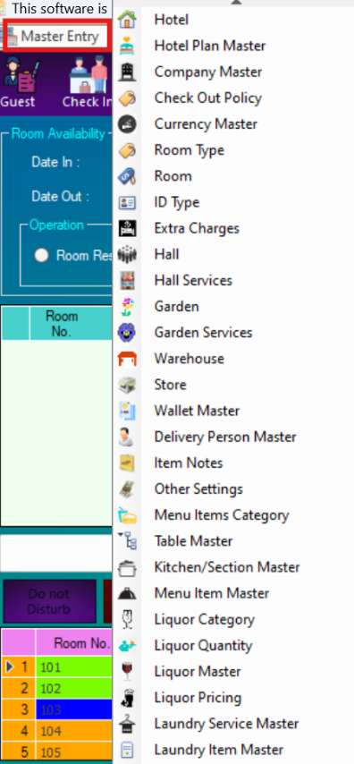 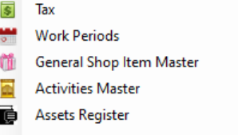Hotel:
This module captures basic hotel information such as name, address, logo, and contact details. It also allows you to add an invoice footer note that will appear on all printed invoices and bills.
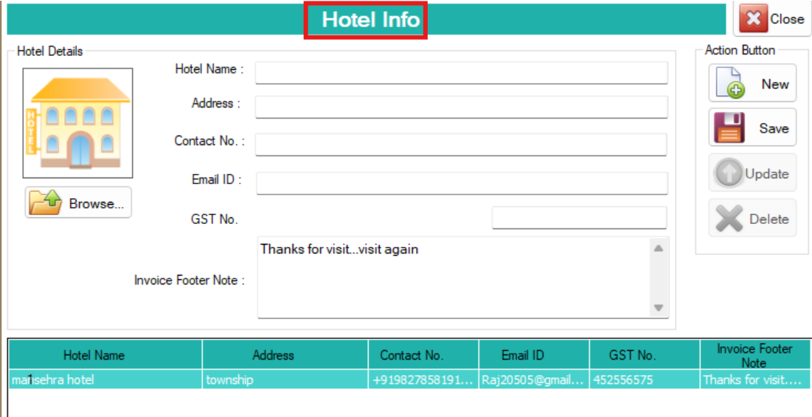Hotel info:
Enter your hotel’s basic details that will be shown on invoices and reports.
- Dashboard > Click on Master Entries from the vertical or top menu.
- Then click on Hotel option to open the Hotel Info form.
- Hotel Name: Enter the official name of your hotel (e.g., Grand Star Hotel)
- Address: Type the full postal address of the hotel (e.g., Main Road, Sector 15, Lahore)
- Contact No: Enter the hotel's landline or mobile number (e.g., 0321-1234567)
- Email ID: Provide a valid email address for communication (e.g., info@grandstarhotel.com)
- VAT No: Input the hotel’s VAT number (if applicable) for tax records
- Invoice Footer Note: Type a short message that will appear at the bottom of every invoice. Example: Thanks for visiting. We hope to serve you again!
- Upload Hotel Logo: Click on the Browse... button (on the left side under the hotel icon).
- Select and upload your hotel’s logo image from your computer. This logo will be shown on printed invoices and documents.
Action Buttons Panel (Right Side):
- New: Click this to clear the form and prepare for entering a new hotel record.
- Save: After filling out the hotel details, click Save to store the information securely in the system.
- Update: When you need to make changes to an existing hotel profile, select the record from the list, update the fields, and click Update to apply the changes.
- Delete: Use this to permanently remove a selected hotel entry from the system.
- Close: Click this to exit the Hotel Info screen safely.
Make sure all the information entered is correct and updated. This info will be used across all billing and customer-related documents.
Hotel Plan Master:
It is used to define pricing structures depending on the season or business policies. For example, rates may vary between peak and off-peak periods.
Please create various pricing plans for your hotel, like for busy seasons and quieter times. The room rates will depend on these plans.
Plan Info Input Panel:
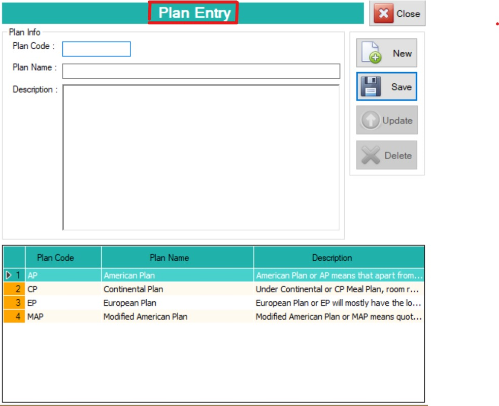Use this area to input new plan details or edit existing ones.
- Dashboard: Click on Master Entries from the vertical or top menu.
- Hotel Plan Master: Then click on Hotel Plan Master option to open the Plan entry form.
- Plan Code: Enter a unique short code for the plan. For example: AP for American Plan, CP for Continental Plan, etc. This code helps in easy referencing throughout the system.
- Plan Name: Type the full name of the plan. This is the official name that appears in bookings, invoices, and guest selection menus.
- Description: It provides a detailed description of the plan. Explain what services are included (e.g., meals, room types, complimentary facilities). This helps users and staff understand the differences between plans when booking.
- Plan Records Table: This table displays all the existing plans along with their codes and descriptions. It gives a quick overview of the available options and allows for easy selection and editing.
Company Master:
If your hotel has an agreement with a company where their employees stay and the company pays the bills, please provide the company's information here. It adds company profiles for corporate billing and employee lodging agreements.
Purpose and Benefits:
- Keeps company contact and tax information organized and accessible.
- Helps in generating company-specific reports for accounts and audits.
- Ensures that invoices generated for corporate clients are VAT-compliant.
- Streamlines the handling of company-based reservations and billing.

This panel contains fields to capture essential company information:
- Dashboard > Click on Master Entries from the vertical or top menu.
- Then click on Company Master option to open the company info form
- Company Name: Enter the full legal name of the company. This name appears in invoices, reports, and lookup lists throughout the system.
- Address: Provide the complete address of the company, including city, street, or building name. This ensures proper documentation for communication and invoicing.
- Contact No: Type in the company’s official contact number. This number can be used by hotel staff to reach out for confirmations or follow-ups.
- Email ID: Input the company’s registered email address. The system uses this for sending invoices, confirmations, or communication related to bookings and transactions.
- VAT No: Enter the company’s VAT (Goods and Services Tax) number. This is mandatory for tax reporting and to ensure the company receives VAT-compliant invoices.
- Search By Company Name: Use this field to quickly search for a company already stored in the system. Start typing the name, and the system will help you locate the entry for review or editing.
Check Out Policy:
In this field, you will input the checkout times for hotel rooms. Set standard checkout times. This data is used for automated reminders and billing.
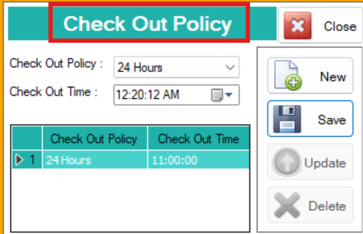Checkout Info:
- Dashboard > Click on Master Entries from the vertical or top menu
- Then click on the Check Out Policy option to open the Check Out Policy form
- Check Out Policy: Select the checkout policy type from the dropdown list (e.g., 24 Hours). This defines how long a guest can stay after check-in (for example, if they check in at 1:00 PM, they can check out by 1:00 PM the next day)
- Check Out Time: Set the standard time at which guests must check out (e.g., 11:00:00 AM). You can type the time manually or use the clock icon to select the time easily. This time helps the front desk staff prepare for new check-ins and manage room cleaning schedules
Currency Master:
In this field, you will input different currencies which you will use in system. It lists all currencies accepted by the hotel (e.g., USD, $, EUR).
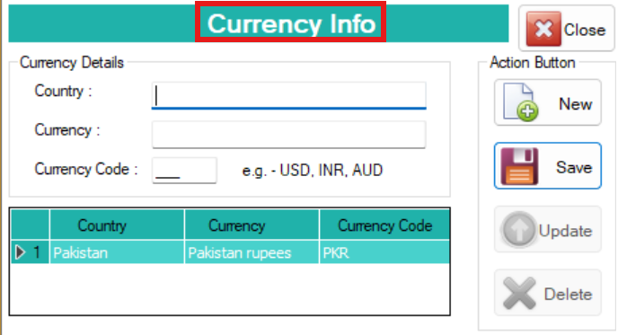Currency Info:
- Dashboard > Click on Master Entries from the vertical or top menu
- Then click on the Currency Info option to open the Currency Details form
- Country: Type the name of the country whose currency is being used (e.g., Pakistan). This helps identify which country the currency belongs to
- Currency: Enter the full name of the currency used in that country (e.g., Pakistan rupees). This value will appear on invoices and reports for clarity
- Currency Code: Type the official currency code used for transactions (e.g., $). Currency codes like USD, INR, EUR, and $ are standard for international recognition and integration with financial systems
Room Type:
Allows input of individual room details including room number, type, capacity, and applicable pricing plans. It's crucial for managing room availability and assignments.
In this field, you will input room types. Define categories of rooms such as:
- Single
- Twin
- Deluxe
- Suite
Room Type Setup:
- Dashboard > Click on Master Entries from the vertical or top menu.
- Then click on the Room Type option to open the Room Type Entry form.
- Click on the New button to add a new room type.
- Room Type: Select or enter the category of the room (e.g., Single, Double, Deluxe).
- Click on Save to store the newly added room type.
- To edit or update an existing room type, select it from the list, make changes, and click Update.
- To delete a room type, select it from the list and click the Delete button.
- All previously added room types are listed below the form for easy reference and management.
Room:
In this field, you will enter details of all the rooms you have, like room number, room type, room rates according to hotel plan, capacity, etc.
Input detailed information for each room:
- Room number
- Type
- Capacity
- Rate per hotel plan
- Features
Room Entry
- Dashboard > Click on Master Entries from the vertical or top menu.
- Click on the List Room option to open the Room Entry form.
- Click the New button to add a new room.
- Room Number: Enter the unique number assigned to the room (e.g., 101, 205).
- Room Type: Select the appropriate room type from the dropdown (e.g., Single, Deluxe).
- Plan Name: Choose the applicable pricing plan or package (e.g., Standard, Premium Plan).
- Room Charges: Enter the per night charge for the room (e.g., 4500 $).
- Maximum Number of Adults: Enter the maximum number of adults allowed in the room (e.g., 2).
- Maximum Number of Kids: Enter the allowed number of children (e.g., 1).
- Floor Number: Specify the floor where the room is located (e.g., Ground Floor, 2nd Floor).
- Room Code/Search Code: Enter a short code to help easily search this room later (e.g., DLX101).
- Status: Use the Activate or Deactivate button to mark the room as available or unavailable.
- Click on Save to store the room details.
ID Type
It stores various acceptable ID documents such as passport, driving license, or national ID card. It helps front desk ensure compliance with legal requirements.
In this field, you will enter the types of ID you can obtain from customer like:
- ID Card
- Passport
- Driving License
ID Types Entry
- Dashboard > Click on Master Entries from the vertical or top menu.
- Click on the List of ID Types option to open the ID Type Entry form.
- Click the New button to add a new identity document type.
- Identity Card Type: Enter the name of the ID type (e.g., CNIC, Passport, Driving License).
- Click on Save to store the new ID type.
- The list of all previously added ID types will appear below for reference and editing.
Extra Charges
It is used to configure charges for exceeding standard room capacity. For instance, adding an extra bed or guest incurs additional fees. This field lets you enter extra charges per person or per bed if they exceed the room's capacity.
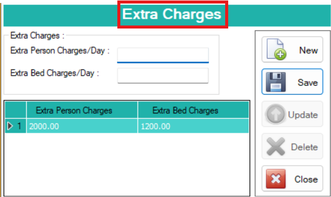Extra Charges
- Dashboard > Click on Master Entries from the vertical or top menu.
- Click on the Extra Charges option to open the Extra Charges Entry form.
- Click the New button to add extra charges.
- Extra Person Charges (Per Day): Enter the additional amount to be charged per day for an extra guest (e.g., 1000 $).
- Extra Bed Charges (Per Day): Enter the daily cost for providing an extra bed (e.g., 800 $).
- Click on Save to store the extra charges.
- See all the detail of charges in form.
Hall
This module documents the halls within the hotel used for events or meetings. It includes their capacities and other rental-related details. This field lets you enter details of any hall you have in hotel.
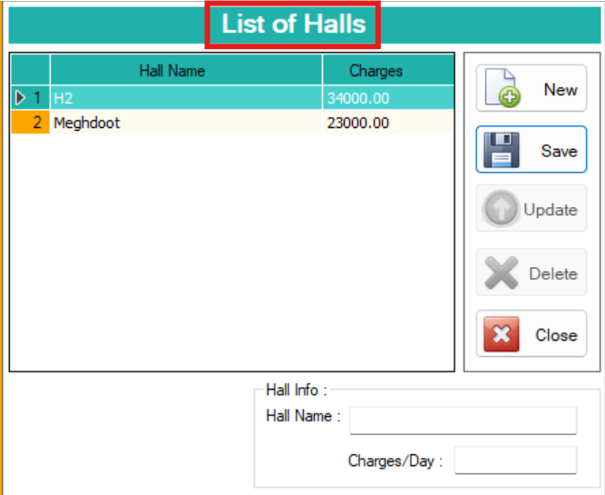Hall Entry (List of Halls)
- Dashboard > Click on Master Entries from the vertical or top menu.
- Click on the List of Halls option to open the Hall Entry form.
- Click the New button to add a new hall.
- Hall Information: Fill in the general details about the hall (e.g., capacity, location, or notes—if applicable).
- Hall Name: Enter the name of the hall (e.g., Banquet Hall A, Conference Room 1).
- Charges Per Day: Enter the rental cost for the hall per day (e.g., 15,000 $).
- Click on Save to store the hall information.
- A list of all added halls will appear below for viewing, editing, or deletion.
Hall Services
It enables the definition of services provided with hall bookings like audio/video equipment, decoration, seating, or catering. This field is for entering the services you provide in the hall.
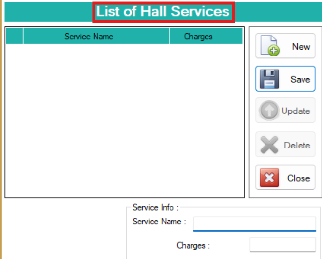Hall Services Entry (List of Hall Services)
- Dashboard > Click on Master Entries from the vertical or top menu.
- Click on the List of Hall Services option to open the Hall Services Entry form.
- Click the New button to add a new service.
- Service Information: Enter details about the service being offered (e.g., Decorations, Sound System, Catering).
- Service Name: Type the name of the service (e.g., Stage Setup, Buffet Arrangement).
- Service Charges: Enter the amount to be charged for this service (e.g., 5000 $).
- Click on Save to store the new hall service.
- A list of all available hall services will be displayed below for review and management.
Garden
If your hotel offers a garden space for events or relaxation, you can register it here with details on its size, capacity, and features. This field lets you enter details of any garden you have in the hotel.
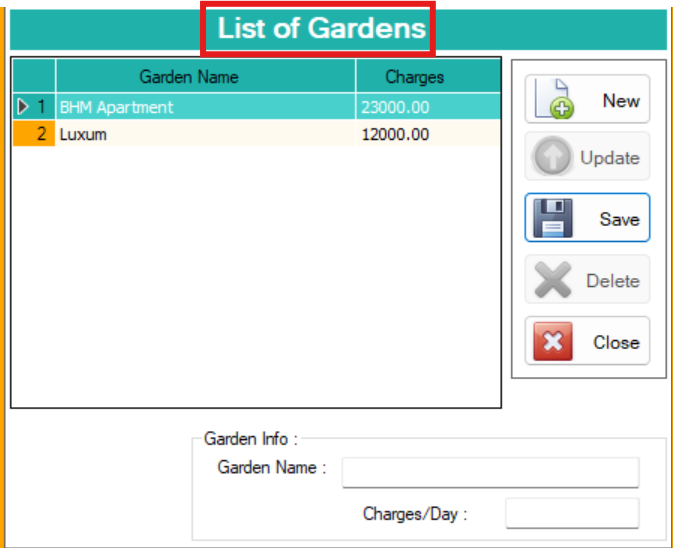Garden Entry (List of Gardens)
- Dashboard > From the left vertical or top navigation menu, click on Master Entries to expand the master configuration options.
- Then click on List of Gardens to open the Garden Entry Form where new garden areas can be added or existing ones can be managed.
- Click on the New button to begin entering a new garden’s information.
- Garden Information: Provide basic information about the garden such as its location, special features, or capacity. For example: "Backside lawn suitable for 300 guests, includes lights and basic décor."
- Garden Name: Enter a recognizable and unique name for the garden. This name will appear in booking options and reports. Example: “Rose Garden” or “Event Lawn 2.”
- Charges Per Day: Specify the rental amount charged for a full day booking of this garden. Enter numeric values only (e.g., 12000 $).
- Ensure all fields are filled accurately to help staff identify and manage the space efficiently.
- Click on the Save button to save the garden entry to the system.
- Once saved, the garden will appear in the list below where you can view, edit, or delete it as needed.
Garden Services
It defines services provided in the garden, such as:
- lighting setups
- floral arrangements
- outdoor dining setup
This field is for entering the services you provide in the garden.
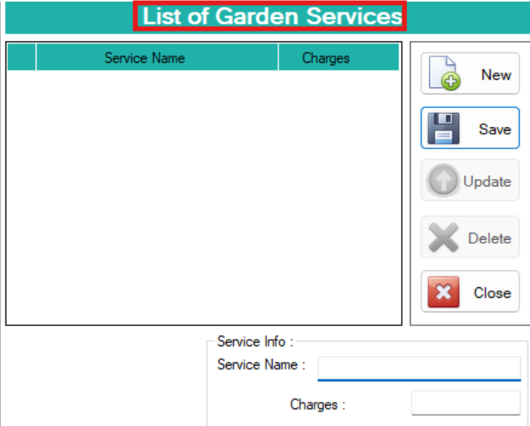Garden Services Entry (List of Garden Services)
- Dashboard > From the left-side or top navigation bar, click on Master Entries to open the list of setup options.
- Then click on List of Garden Services to open the Garden Services Entry Form where services related to gardens can be added or managed.
- Click on the New button to begin creating a new garden service entry.
- Garden Service Information: Describe the service that will be offered along with the garden. This could include services like lighting setup, decoration, catering, sound system, etc. For example: “Basic decoration with stage and floral arrangements.”
- Service Name: Enter the specific name for the service. This is the label that will be used throughout the system for selection and invoicing. Example: “Wedding Décor Package” or “Outdoor Buffet Setup.”
- Charges Per Day: Input the fee charged for this service on a per-day basis. Use numeric values (e.g., 5000 $) to ensure clarity in billing and accounting.
- Ensure all service details are filled accurately so staff and front-desk teams can offer and apply the correct services during customer bookings.
- Once completed, click on the Save button to store the new service in the system.
- The newly added service will now be visible in the list below, where you can view, edit, or delete it if needed.
Warehouse
It tracks warehouses within the hotel premises. It helps in organizing and storing inventory like:
- bulk linen
- equipment
- cleaning supplies
Warehouse Entry (List of Warehouses)
- Dashboard > From the vertical or top navigation menu, click on Master Entries to view available setup options.
- Select the List of Warehouses option to open the Warehouse Entry Form where storage areas or warehouses can be managed.
- Click on the New button to begin adding a new warehouse to the system.
- Warehouse Name: Enter the official or identifiable name of the warehouse. This could be based on its location, purpose, or assigned department. For example: “Main Storage Room,” “Kitchen Stock Warehouse,” or “Event Supplies Depot.”
- This name will help staff select the correct warehouse when managing inventory or assigning items.
- Once the name is entered, click on the Save button to store the warehouse record.
- After saving, the warehouse will appear in the list displayed below, where you can review, edit, or delete entries as needed for inventory management.
Store
It manages different stores or retail points within the hotel. It allows adding items, assigning printers, and setting unique pricing for each store.
This field allows you to enter information about the stores you have in the hotel. You can also add multiple stores with different pricing plans and specify the details of the dedicated printers.
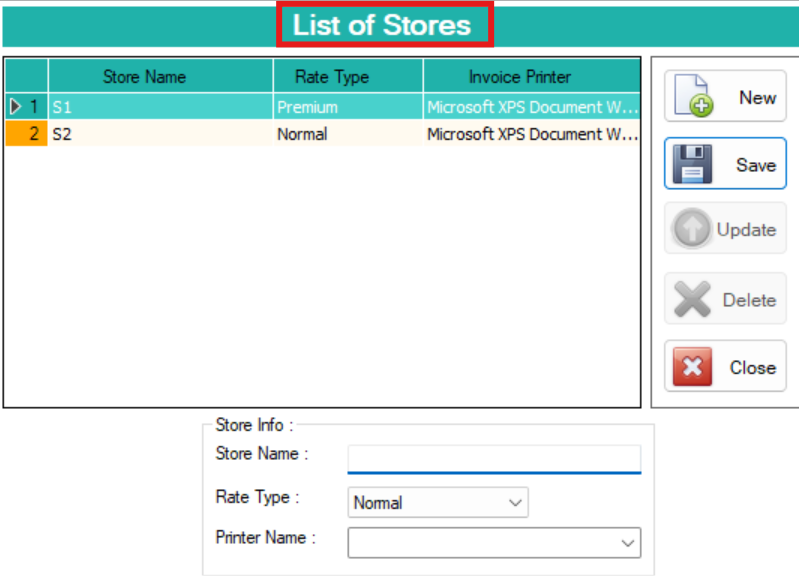Store Entry (List of Stores)
- Dashboard > Navigate to the Master Entries section using the vertical or top navigation menu.
- Click on List of Stores to open the Store Entry Form, where different hotel stores or outlets can be created and managed.
- Click on the New button to begin entering a new store.
- Store Information: Provide any relevant description or internal notes about the store. This could include its purpose or department (e.g., “Bar Store,” “Kitchen Supply Store,” “Mini Bar Room Store”).
- Store Name: Enter a unique and recognizable name for the store that clearly identifies it for users and billing purposes. Example: “Main Kitchen Store” or “Beverage Counter.”
- Rate Type: Specify the rate structure this store will follow. This could refer to pricing rules such as Standard Rate, Happy Hour Rate, or Wholesale Rate, depending on your system’s setup.
- Invoice Printer Name: Enter the printer device name that is assigned to print invoices from this store. Example: “POS_Printer1” or “Kitchen Printer.” This helps route print jobs correctly during transactions.
- After filling in all required fields, click on the Save button to store the store record in the system.
- The new store will now be listed in the section below, where it can be viewed, edited, or deleted as per operational requirements.
Wallet Master
It can add and manage supported digital payment options such as Apple Pay, Samsung Pay, and others. It helps diversify payment methods for guests. This is to enter different wallets.
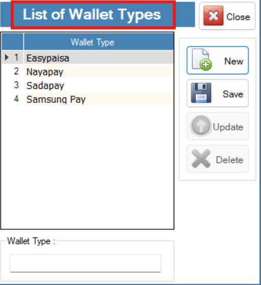Wallet Type Entry (List of Wallet Types)
- Dashboard > Go to the Master Entries section from the vertical or top navigation menu.
- Click on List of Wallet Types to open the Wallet Type Entry Form, where digital payment options can be defined for the hotel system.
- Click on the New button to begin adding a new wallet type.
- Wallet Type: Enter the name of the digital wallet or mobile payment method that your hotel accepts. Examples include:
- Sadapay
- Easypaisa
- JazzCash
- PayPak
- NayaPay
- These wallet types will appear as payment method options during customer billing or deposit handling.
- Once entered, click the Save button to add the wallet type to the system.
- The newly added wallet type will appear in the list below, where you can view, update, or delete it as needed.
Delivery Person Master
It captures contact information of delivery personnel. It helps in assigning and managing food, laundry, or item deliveries to rooms.
This is used to enter details of delivery person. Such as:
- Name
- Contact Number
- Address
Delivery Person Entry
- Dashboard > From the vertical or top navigation bar, click on Master Entries to expand the list of configuration options.
- Select Delivery Person Entry to open the form used for adding and managing hotel delivery staff information.
- Click the New button to begin adding a new delivery person.
Fill out the following fields:
- Employee ID: Enter the unique ID assigned to the delivery person. This could be a system-generated or manually created code (e.g., DLY001).
- Employee Name: Type the full name of the delivery staff member (e.g., Ali Khan).
- Employee Address: Provide the full residential address of the employee (e.g., House #45, Gulshan Town, Lahore).
- City: Enter the city where the employee resides or is based (e.g., Lahore).
- Contact Number: Input a valid mobile or landline number for communication (e.g., 0312-1234567).
- Email Address: Enter a valid and active email ID for formal communication (e.g., alikhan@gmail.com).
- Date of Joining: Select or enter the employee’s joining date using the date picker (e.g., 2025-07-01).
- Status: Choose the employee’s current status:
- Active: For currently working staff.
- Inactive: For former or suspended delivery personnel.
Item Notes
It allows custom notes to be added to food orders. For example, a guest can request “no onions” or “extra spicy.” Enhances personalization.
This field is where you can write special notes for food orders, like:
- Requesting less sugar
- No ice

Notes Master Entry
- Dashboard > From the top or side navigation panel, click on Master Entries to access the system configuration options.
- Click on Notes Master to open the Notes Entry Form, used to record guest-related notes or special requests.
- Click the New button to create a new note entry.
- Fill out the following field:
- Note: Type the note or comment received from a guest or internal staff. This can include customer preferences, special instructions, or general remarks.
- Examples:
- “Guest prefers room on the top floor.”
- “Please arrange birthday decoration before 7 PM.”
- After entering the note, click the Save button to record it in the system.
Other Settings
It configures costs for additional services like home delivery or takeaway packaging. These fees are automatically applied during billing.
This field is where you enter the costs for home delivery and takeout orders.
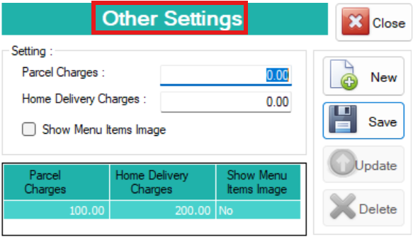Other Settings Entry (List of Other Settings)
- Dashboard > Navigate to the Master Entries section from the vertical or top menu.
- Click on List of Other Settings to open the Other Settings Entry Form, which allows you to configure service-related charges and display preferences.
- Click the New button to begin adding new settings.
Fill out the following fields:
- Parcel Charges: Enter the amount to be charged for takeaway or parcel orders.
Example: 100 $ for each parcel order. - Home Delivery Charges: Specify the delivery fee to be charged for orders delivered to a customer’s address.
Example: 200 $ per home delivery order. - Show Menu Item Images: Click this checkbox or button to enable or disable image display for menu items.
- If enabled, customers or staff will see food/drink images along with item names when taking orders or browsing the menu.
- After entering all values and preferences, click on the Save button to store the settings.
- The saved settings will appear in the list below, where you can view or modify parcel/home delivery charges and image display status.
- This section helps streamline your service charges and improve the customer interface.
Menu Item Category
It categorizes food items into sections like starters, mains, desserts, and drinks. Each category can have its own tax configuration.
This is where you list different food categories like:
- Salads
- Pizzas
- Beverages
You can also set the tax rates for each menu item here.
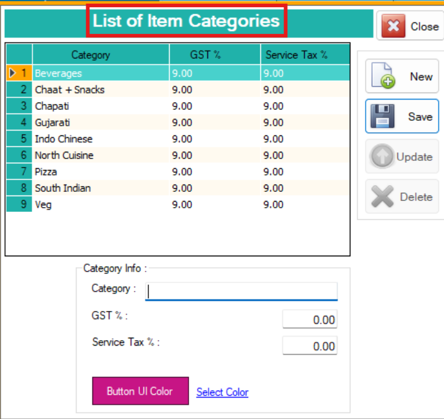Item Category Entry (List of Item Categories)
- Dashboard > Go to the Master Entries section using the vertical or top menu.
- Click on List of Item Categories under the Menu Item Category section to open the Item Category Entry Form, where you can define food and beverage item categories for the restaurant or POS module.
- Click the New button to add a new item category.
Fill out the following fields:
- Category Information: Enter a clear and descriptive name for the category. This helps in grouping menu items logically.
Examples:- Beverages
- Fast Food
- Desserts
- Main Course
- VAT Tax (%): Specify the percentage of VAT (Goods and Services Tax) applicable to items under this category.
Example: 17% - Service Tax (%): Enter the applicable service tax rate, if any, for this category.
Example: 5% - Button Color: Select a color for the category button. This helps visually distinguish it on the POS interface.
Example: Red for "Hot Food", Blue for "Drinks" - After filling in all required details, click the Save button to store the item category.
- The new category will now appear in the list below, where you can view, edit, or delete it.
- This categorization improves billing accuracy, tax calculation, and user experience on the ordering screen.
Table Master
It defines the layout of dining tables, including their number and location. It supports order assignment in dine-in areas.
This field allows you to enter information about the tables you have in the hotel for dine-in, along with their store location.

Table Entry (List of Tables)
- Dashboard > From the vertical or top navigation menu, click on Master Entries to open configuration options.
- Click on List of Tables to access the Table Entry Form, which is used to define and manage tables for dine-in service within the restaurant or store area.
- Click the New button to add a new table entry.
Fill out the following fields:
- Table Number: Enter a unique number or identifier for the table. This helps staff assign orders correctly and track occupancy.
Example: T1, 101, VIP-01 - Store Name: Select or enter the name of the store or section where this table is located.
Example: Main Dining Hall, Rooftop Café, Lounge Area - Ensure the table number is not duplicated and the store assignment is accurate to prevent confusion during table bookings and service.
- Click the Save button to store the new table information.
- After saving, the table will be listed in the section below, showing all existing tables along with their assigned stores. You can edit or delete any entry when needed.
Kitchen/Section Master
It manages the various kitchens within the hotel. This field is where you enter kitchen details along with the printer used in each kitchen.
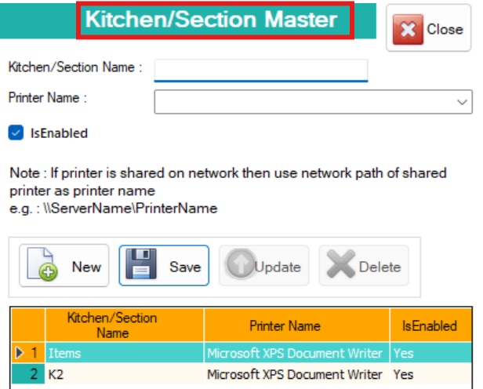Kitchen/Section Master Entry
- Dashboard > From the vertical or top menu, navigate to Master Entries to view all setup modules.
- Click on Kitchen/Section Master to open the Kitchen/Section Entry Form, used to define different food preparation areas or service sections within the hotel or restaurant.
- This setup is crucial for directing specific orders (like drinks or grill items) to the correct kitchen or section and for managing print routing to dedicated kitchen printers.
Fill out the following fields:
- Kitchen/Section Name: Enter the name of the kitchen or section where a group of menu items will be prepared.
Examples:- Main Kitchen
- Bar Section
- Bakery
- Tandoor Section
- Printer Name: Type the name of the printer assigned to this kitchen/section. This ensures that orders for items from this section are printed at the correct printer station.
Example: Kitchen_Printer1 - Is Enabled: Check or click the Is Enabled option to activate this kitchen/section. If unchecked, the section will be inactive and not available during order placement.
- After entering the required information, click the Save button to store the entry.
- The newly added kitchen or section will now appear in the list below, showing its name, printer, and status (enabled/disabled). You can edit or delete existing entries as needed.
Menu Item Master
It allows you to add detailed menu items with names, descriptions, prices, categories, and linked kitchen sections. This is where you add menu items to your list. You can include details like the category it belongs to, which kitchen it's prepared in, and set different prices if needed.

Menu Item Entry (Master Entries)
- Dashboard > From the vertical or top navigation bar, click on Master Entries to access system configuration options.
- Click on Menu Item Entry to open the Menu Item Form, which is used to define food or beverage items that will appear in the restaurant’s ordering and billing system.
- Click on the New button to start adding a new menu item.
Fill out the following fields:
- Item Name: Enter the name of the dish, product, or drink being offered.
Example: Chicken Biryani, Grilled Sandwich, Cappuccino - Category: Select the appropriate category from the drop-down list (e.g., Beverages, Fast Food, Desserts).
- Kitchen/Section: Choose the kitchen or section where this item will be prepared (e.g., Main Kitchen, Bakery, Bar Section).
- Rates (Multiple Pricing Levels):
- Normal Rate – Regular customer price
- Bronze Rate – Discounted rate for bronze members
- Silver Rate – Rate for silver-tier customers
- Gold Rate – Premium rate or loyalty-based pricing
- Premium Rate – High-end or VIP rate
Normal: 500 $
Silver: 480 $
Gold: 450 $ - Discount: Enter any applicable default discount (percentage or fixed).
Example: 10% - Search Code (Item Code): Assign a unique short code to the item.
Example: CBR500 for Chicken Biryani - Item Picture: Upload an image of the item:
- Click Browse to upload from your system.
- Use webcam capture if available.
- Click Remove to delete or update the image.
- Click on the Save button to store the item in the system.
- The newly created item will now appear in the list below, where you can view, edit, or delete menu items.
Liquor Category
This is where you list different liquor categories on your menu. You can also set the tax rates for each liquor item here.